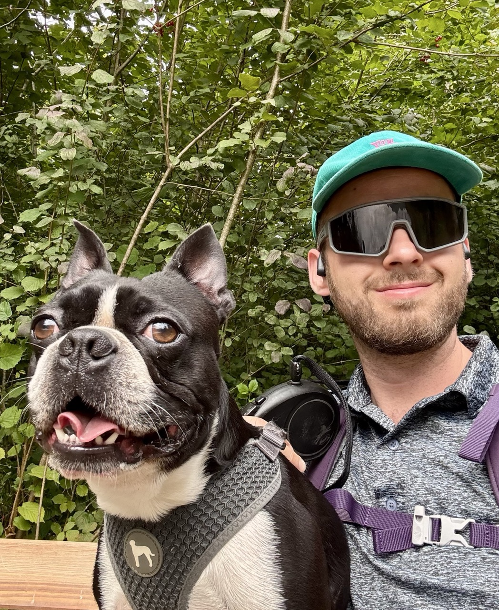
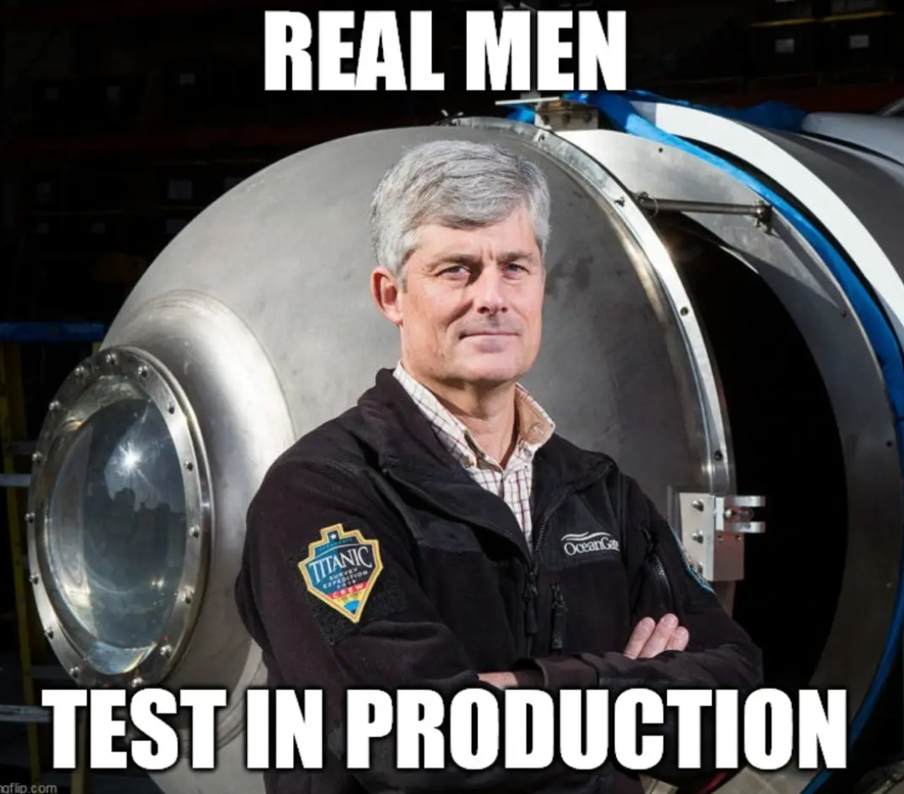

Návrh & vývoj softwaru
Python, JavaScript, SQL. Stavba SaaS produktů od datové vrstvy po UI. Důraz na malé, srozumitelné, udržitelné systémy.
Software Engineer/Solution Architect
Pracuju na pomezí soukromého sektoru, veřejné správy a vlastních produktů. Specializuju se na systémovou integraci, databáze a stavbu malých, dobře navržených SaaS aplikací.


// life mottoPython, JavaScript, SQL. Stavba SaaS produktů od datové vrstvy po UI. Důraz na malé, srozumitelné, udržitelné systémy.
PostgreSQL a MSSQL. Komplexní SQL (CTE, rekurze, deduplikace), návrh schémat, migrace, datová validace.
Propojování enterprise systémů, API návrh, JSON schema, ArchiMate modelování, BE/FE specifikace. Mosty mezi business požadavky a implementací.
Digitální transformace, IT strategie, vendor management, management consulting v rámci dlouhodobých spoluprací.
Lokální LLM inference na Apple Silicon, autonomní agentní systémy postavené nad Claude Code.
Stavím tailor-made aplikace pro malé a střední firmy, vedu digitální transformaci a doprovázím klienty od první analýzy přes implementaci až po provoz. Typicky dlouhodobé vztahy, ne jednorázové dodávky.
Analýza, integrace a architektura informačních systémů státní správy — typicky jako externí konzultant ve spolupráci s etablovanými českými IT integrátory.
Open-source zákaznický portál pro české výrobní firmy. Zakázky, výkresy, stav výroby na jednom místě.
SaaS · Open sourceEvidence docházky pro malé a střední české firmy.
SaaSAI tool, co z nudného korporátního LinkedIn profilu udělá brutální diss track. Žert pro kolegu za $1.99.
Side project · AIAI-generated denní geopolitický newsletter.
Newsletter · AIAutonomní agentní systém pro vývoj softwaru postavený nad Claude Code.
Open source · ToolingIT Analyst / Solution Architect
přesAricoma
Projekty pro veřejný sektor — analýza a architektura informačních systémů státní správy.
IT Analyst / Solution Architect
přesEuropean Code Factory
Projekty pro veřejný i soukromý sektor — analýza, integrace.
Digital Transformation Lead, interim CEO
přesin-house
Vedení digitální transformace a IT strategie ve výrobní skupině v severních Čechách. ERP/CRM implementace, vendor management.
Consultant, Senior Analyst
přesDeloitte CE
Bankovní a regulátorní sektor — analýza, RPA Center of Excellence, IT risk assessment.
IT konzultant na volné noze
přesvlastní
Tailor-made řešení pro SME — vývoj, implementace, dlouhodobé spolupráce.